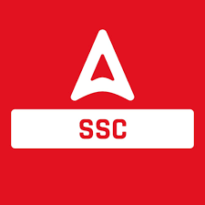

Conquer Your SSC Exams
Your comprehensive guide to preparing for SSC CGL, CHSL, MTS, and other Staff Selection Commission examinations.
Explore Exam Syllabus💼 About SSC Exams
The Staff Selection Commission (SSC) conducts various examinations annually to recruit candidates for numerous Group 'B' and Group 'C' posts in various Ministries/Departments/Organizations of the Government of India. These exams offer diverse career paths for graduates and 12th pass students.
🎯 Popular Exams:
-
●
SSC CGL (Combined Graduate Level): For various Group 'B' and 'C' posts requiring a Bachelor's degree.
-
●
SSC CHSL (Combined Higher Secondary Level): For Data Entry Operator (DEO), Lower Division Clerk (LDC), Postal Assistant/Sorting Assistant posts (12th pass).
-
●
SSC MTS (Multi-Tasking Staff): For various non-technical Group 'C' posts (10th pass).
-
●
SSC GD Constable: For recruitment of Constables (GD) in various armed forces.
-
●
SSC CPO (Central Police Organization): For Sub-Inspector (SI) in Delhi Police, CAPFs, etc.
✅ Eligibility Highlights:
-
●
Education: Varies by exam (10th pass, 12th pass, Bachelor's degree).
-
●
Age: Typically between 18-27 or 20-30 years, depending on the exam and post (with relaxations for reserved categories).
📝 SSC Exam Syllabus
The syllabus for most SSC exams generally includes General Intelligence & Reasoning, General Awareness, Quantitative Aptitude, and English Comprehension. The difficulty and depth vary based on the exam level.
✨ Common Subjects:
-
●
General Intelligence & Reasoning: Analogies, Similarities and Differences, Spatial Visualization, Problem Solving, Analysis, Judgment, Decision Making, Visual Memory, Discrimination, Observation, Relationship Concepts, Arithmetical Reasoning, Verbal & Figure Classification, Arithmetical Number Series, Non-Verbal Series etc.
-
●
General Awareness: Questions on India and its neighboring countries especially pertaining to History, Culture, Geography, Economic Scene, General Policy & Scientific Research.
-
●
Quantitative Aptitude: Whole Numbers, Decimals, Fractions and relationship between Numbers, Percentage, Ratio & Proportion, Square roots, Averages, Interest, Profit & Loss, Discount, Partnership Business, Mixture and Allegation, Time & Distance, Time & Work, Basic algebraic identities, Geometry, Mensuration, Trigonometry, Statistical Charts.
-
●
English Comprehension: Spot the Error, Fill in the Blanks, Synonyms/Homonyms, Antonyms, Spellings/Detecting Mis-spelt words, Idioms & Phrases, One word substitution, Improvement of Sentences, Active/Passive Voice of Verbs, Conversion into Direct/Indirect narration, Shuffling of Sentence parts, Shuffling of Sentences in a passage, Cloze Passage, Comprehension Passage.
📺 Best YouTube Playlists for SSC Study
Boost your SSC exam preparation with these highly recommended YouTube channels and their specialized playlists. They offer excellent content for all subjects and exam stages, from basic concepts to advanced problem-solving.
 Unacademy SSC Exams
Unacademy SSC Exams
A leading platform offering a vast library of free live classes, recorded lectures, and practice sessions for all major SSC exams. Covers all subjects with expert educators.
Visit Full Playlist SSC Adda247
Offers daily current affairs, reasoning, quantitative aptitude, and English classes specifically tailored for SSC exams. Known for its comprehensive and updated content.
Visit Full Playlist📄 Previous Year Papers & Mock Tests
Regular practice with previous year papers and mock tests is indispensable for SSC exams. They help you familiarize yourself with the exam pattern, question types, and improve your speed and accuracy.
📚 Recommended Books
Equip yourself with these essential books, widely recommended for SSC exam preparation. A focused approach on core subjects is crucial for success.
Quantitative Aptitude by R.S. Aggarwal
A Modern Approach to Verbal & Non-Verbal Reasoning by R.S. Aggarwal
Objective General English by S.P. Bakshi
Lucent's General Knowledge
General Science by Lucent's
SSC Previous Year Solved Papers